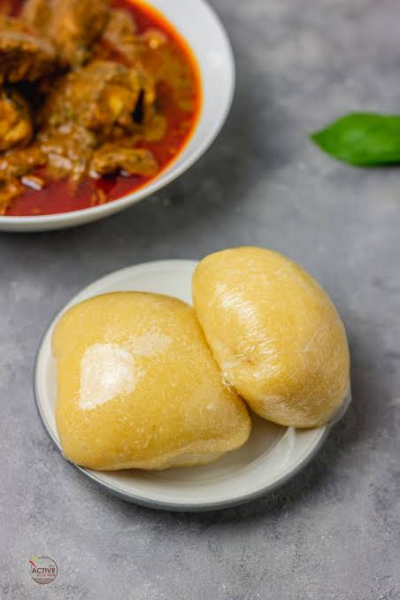

homepage
eba recipe

Description
Eba is a Nigerian dish made from cassava flour, also known as garri. It is a staple food in many parts of Nigeria and is often served with soups and stews. Eba is known for its smooth texture and slightly sour taste, which comes from the fermentation of the cassava flour.
Ingredients
- boiling water
- cassava flakes(garri)
steps
- Put water on fire and leave it to boil
- Pour the boiling water inside a bowl
- Pour the cassava flakes(garri) into the bowl of hot water till its evenly distributed
- Stir with a turning stick until its soft to desire
- serve hot and enjoy with your favorite soup